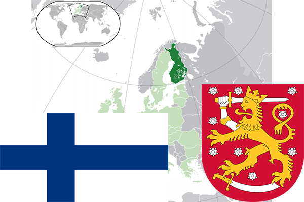

To`liq nomi: Finlandiya Respublikasi
Region: Shimoliy-sharqiy Yevropa
Qonunchilik shakli: Respublika
Mustaqillik kuni : 6 -dekabr 1917 yil (Sovet Rossiyasidan)
Poytaxt: Xelsinki
Maydoni: 338 400 km² (dunyoda 64 -o`rinda )
Chegaradosh davlatlari: Norvegiya, Rossiya, Shvetsiya
Aholisi: 5 560 000 (dunyoda 114 - o`rinda, 2015 -yil roʻyxat)
Aholi zichligi: 16 /km²
Aholining o`rtacha yoshi: 78,5 yil ( 82,3 ayollar, 75,2 erkaklar)
Rasmiy tili: Shved va fin tili
Dini: Lyuteranstvo
Pul birligi: Yevro
Telefon prefiksi: +358
Internet domen: .fi
Xalqaro tashkilotlarga a`zoligi: BMT (1955 – yildan), Yevropa Ittifoqi (1995-yildan)
Dengiz va okeanlarga chiqishi: Boltiq dengizi
YIM: Butun: $ 185,019 mlrd , Jon boshiga: $ 34 401 (2008 - yil roʻyxati)
Yirik shaharlari: Xelsinki, Espoo, Tampere, Vantaa, Turku